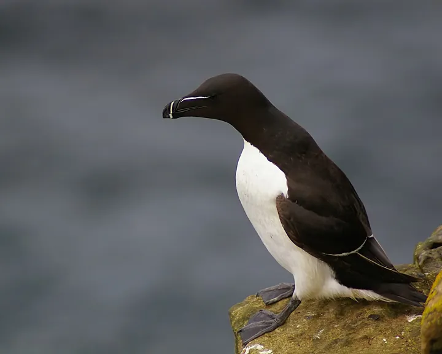
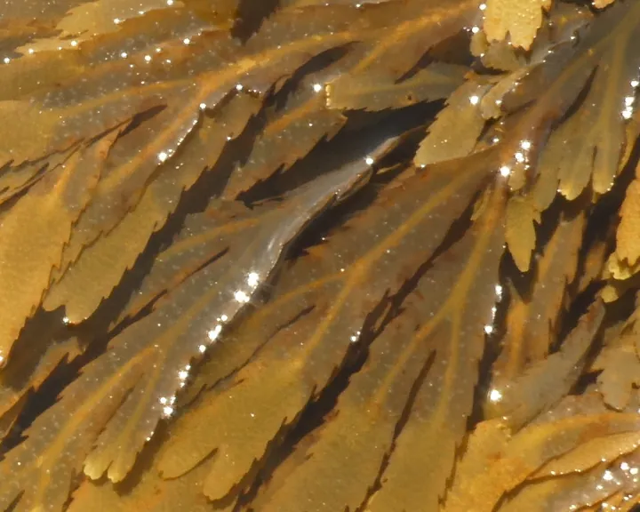

Trottellumme oder Tordalk?
Beide sind schwarz-weiß und brüten auf dem Helgoländer Lummenfelsen. Die Trottellumme hat einen spitzen Schnabel, der Tordalk einen hohen, seitlich flachen Schnabel mit weißem Strich.


Die Unterschiede
| Trottellumme | Tordalk | |
|---|---|---|
| Schnabel | spitz wie ein Dolch | hoch und flach, mit weißem Querstrich |
| Oberseite | dunkel schokoladenbraun | tiefschwarz |
| Schwanz | kurz | länger und spitz |
| Auf Helgoland | einige tausend Paare | nur wenige Dutzend Paare |
| Ruf | tiefes, knurrendes „oarrr“, auf dem Lummenfelsen ständig zu hören | tiefes, knarrendes Knurren, nur an der Kolonie |
Merkhilfe: Spitzer Dolch: Lumme. Dicker Schnabel mit weißem Strich: Tordalk.
Weitere Doppelgänger
-

Foto: Bj.schoenmakers, CC0 
Foto: Joymaster, Gemeinfrei Seestachelbeere oder Ohrenqualle?
Beides glasklare Gallerte im Spülsaum. Die Seestachelbeere ist eine kleine Rippenqualle und brennt nie, die Ohrenqualle ist eine flache echte Qualle.
-

Foto: JackyM59, CC BY-SA 4.0 
Foto: Voctir, CC BY-SA 4.0 Blasentang oder Sägetang?
Zwei ähnliche Brauntange. Blasentang hat paarige Luftblasen und glatte Ränder, Sägetang keine Blasen und gezackte Ränder.
-

Foto: H. Zell, CC BY-SA 3.0 
Foto: Michel Langeveld, CC BY-SA 4.0 Herzmuschel oder Baltische Plattmuschel?
Beide sind kleine, rundliche Muscheln im Spülsaum. Die Herzmuschel hat kräftige Rippen, die Plattmuschel ist glatt und oft bunt.